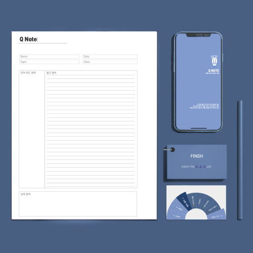

Web Design Studio How are you feeling today?
힘내!라는 말보다 힘이 나는 말이 있습니다. '말'이란 누군가에게 힘을 주는 에너지가 될 수도 있고, 남을 슬프게, 또는 아프게 만드는 무기가 될 수도 있습니다. 말들이 모여 소통이 되고 소통은 우리의 삶에서 빼놓을 수 없는 부분이 되었습니다. 그중 소통에 대한 갈망이 아주 높으며, 뜻대로 되지 않는 소통을 가장 많이 경험하고 있는 직장인들을 대상으로 원활하지 않은 소통으로 인해 생겨난 다양한 감정을 위로해주고, 조언을 해주는 웹사이트를 기획해 보았습니다.

Interactive Meida Q NOTE
코넬노트란 세계적으로 유명한 공부 방법 중 하나입니다. 유용한 공부 방법을 이용해 바쁜 대학생들이 효율적으로 공부를 했으면 좋겠다는 마음으로 이 어플을 만들게 되었습니다. 무거운 책을 들고 다닐 필요 없이, 여러 필기도구를 살 필요 없이 Q NOTE어플만 있다면 언제든지 편안하게 공부할 수 있습니다.

Multimedia Design
클라우드키친
백 살까지 살 각오는 하셨습니까?
아프지 않고 외롭지 않은 노년을 위한 100세 인생을 위한 지침서! 시니어들의 제2의 삶이 시작되는 곳! 공유 주방, 클라우드 키친입니다. 주방은 더 이상 음식을 만들기만 한 공간이 아닙니다. 주방 그 이상을 공유하다!
아프지 않고 외롭지 않은 노년을 위한 100세 인생을 위한 지침서! 시니어들의 제2의 삶이 시작되는 곳! 공유 주방, 클라우드 키친입니다. 주방은 더 이상 음식을 만들기만 한 공간이 아닙니다. 주방 그 이상을 공유하다!